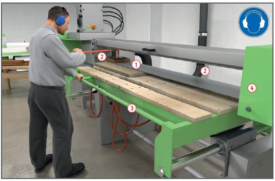

Gefährdungen
- Durch Berühren des Schleifbandes besteht Verletzungsgefahr der Hände und das Gehör kann geschädigt werden. Bei Holzstäuben besteht die Gefahr von Atemwegserkrankung.
Schutzmaßnahmen
- Betriebsanleitung des Herstellers beachten.
- Holzstaubgeprüfte Maschinen verwenden. Wenn erforderlich Atemschutz tragen.
- Unterweisung anhand der Betriebsanweisung.
- Gehörschutz und Sicherheitsschuhe benutzen. Lärmbereiche kennzeichnen.
- Schleiftischhöhe entsprechend der Werkstückdicke einstellen.
- Besonders bei kleinen Werkstücken
in der Nähe der Absaugöffnung schleifen
 .
.
- Beschädigte Schleifbänder
unverzüglich austauschen.
- Spannung des Schleifbandes
regelmäßig überprüfen.
- Maschinen nur mit wirksamer
Absaugung betreiben
 .
.
- Staubansammlungen im
Maschinenbereich beseitigen.
Zusätzliche Hinweise zur Staubabsaugung
- Wirksamkeit der Absauganlage regelmäßig überprüfen.
- Umlenkrollen sind am Umfang
zu verdecken.
- Speichenräder müssen ausgekleidet sein.
- Den Schleiftisch nur am Führungsrohr führen
 .
.
- Das Schleifband muss am
Umfang und an den Kanten bis
auf den Arbeitsbereich verkleidet sein
 .
.
Arbeitsmedizinische Vorsorge
- Arbeitsmedizinische Vorsorge
nach Ergebnis der Gefährdungsbeurteilung
veranlassen (Pflichtvorsorge)
oder anbieten (Angebotsvorsorge).
Hierzu Beratung
durch den Betriebsarzt.
07/2021